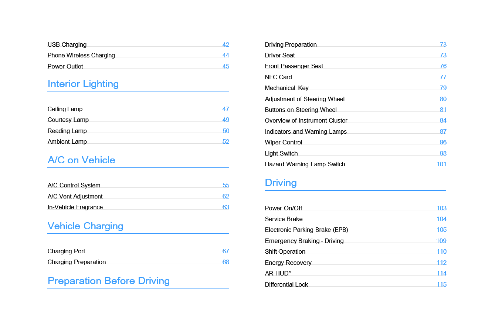

Kære kunde,
Tak fordi du valgte dit Windrose-køretøj.
Læs venligst denne ejerens håndbog omhyggeligt, inden du kører i køretøjet for første gang. Den indeholder vigtige oplysninger om køretøjets funktioner, sikker drift, vedligeholdelseskrav og tekniske specifikationer. Kendskab til disse oplysninger vil bidrage til sikker kørsel og optimal køretøjsydelse.
Da forskellige køretøjskonfigurationer og ekstraudstyr kan variere, kan det leverede køretøj afvige en smule fra beskrivelserne eller illustrationerne i denne håndbog. Windrose forbeholder sig retten til at ændre køretøjets design, specifikationer og udstyr uden forudgående varsel som led i løbende produktforbedringer.
Oplysningerne, illustrationerne og de tekniske data i denne håndbog var korrekte på udgivelsestidspunktet. De er alene vejledende og udgør ikke en kontraktmæssig forpligtelse.
Ingen del af denne ejerens håndbog må reproduceres eller videresendes i nogen form uden forudgående skriftlig tilladelse fra Windrose.
Bemærk: Forsidebillederne og illustrationerne i denne håndbog er kun til reference. Det faktiske køretøjs udseende og specifikationer kan variere.
Indholdsfortegnelse




Oplysninger til brugerne
↑ TopInden du kører
Dette køretøj er en batteridrevet elektrisk trækker.
Under daglig drift og vedligeholdelse skal alle advarsler og instruktioner i denne ejerens håndbog (herefter kaldet "denne håndbog") følges for at undgå skader på køretøjet eller personskader.
Inden du kører for første gang, bør du læse denne håndbog omhyggeligt for at blive fortrolig med køretøjets funktioner og driftskrav. Hvis du støder på problemer under brug, bedes du kontakte Windrose servicelinje.
Ophavsretten til denne håndbog tilhører Windrose. Ingen del af denne håndbog må reproduceres, videresendes eller distribueres uden forudgående skriftlig tilladelse fra Windrose.
Windrose forbeholder sig retten til at opdatere indholdet af denne håndbog uden forudgående varsel som led i løbende produktforbedringer. Se venligst den elektroniske ejerens håndbog, der er tilgængelig på centerskærmen eller i Windrose-mobilappen, for de nyeste køretøjsoplysninger.
Windrose hjemmeside:
Windrose servicelinje:Du kan søge efter "Windrose" i den officielle mobilappbutik for at downloade applikationen.
NoteForkortelser introduceres i formatet "fuldt navn (forkortelse)" ved første omtale. Herefter bruges forkortelsen.
Beskrivelse af advarsler
↑ TopInden du kører
Følgende signalord og symboler bruges i denne håndbog:
WarningAngiver en farlig situation, som, hvis den ikke undgås, kan medføre alvorlig personskade eller dødsfald.
Bemærkning
↑ TopNoticeAngiver en situation, der kan forårsage skade på køretøjet eller dets komponenter.
Note
↑ TopNoteGiver supplerende nyttige oplysninger eller driftsvejledning.
Miljøbeskyttelse
↑ TopMiljøbeskyttelseAngiver oplysninger relateret til miljøbeskyttelse eller energieffektivitet.
Asterisk
↑ TopEn asterisk (*) efter et funktionsnavn angiver, at funktionen kun gælder for visse køretøjsmodeller eller valgfrie konfigurationer.
Illustrationsoplysninger
↑ Top
Denne pil angiver den præcise placering af objektet som vist på billedet.
Denne pil angiver bevægelsesretningen for objektet som vist på billedet.
Denne pil angiver rotationsretningen for objektet som vist på billedet.
Denne pil angiver flipperetningen for objektet som vist på billedet.
Miljøbeskyttelse
↑ TopInden du kører
Windrose er forpligtet til bæredygtig udvikling og miljøbeskyttelse. Dette køretøj er designet til at forbedre energieffektiviteten og reducere emissioner. Du kan bidrage til miljøbeskyttelsen ved at køre ansvarligt og betjene køretøjet på en energieffektiv måde.
Driftssikkerhed
Inden du kører
Overhold altid den maksimalt tilladte totalvægt og aksellast. Overbelast ikke køretøjet, da overbelastning kan medføre skade på køretøjet, tab af kontrol eller personskade.
Udskift enhver sikkerhedssele, der har været udsat for stødkræfter ved en kollision, selv hvis der ikke er synlig skade
Warningtil stede.
Warning
Kør aldrig på frihjul i neutral. Dette fjerner drivmotorbremsningen og kan medføre tab af kontrol over køretøjet.
Inden kørslen skal sædet justeres til den korrekte position. En forkert siddestilling kan forårsage træthed, uventet sædebevægelse eller tab af kontrol over køretøjet. Sørg for, at sædeposition muliggør korrekt brug af sikkerhedsselen.
Sikkerhedsseler er vigtige sikkerhedsanordninger. Alle passagerer skal bære sikkerhedsselerne korrekt, når køretøjet er i bevægelse.
Undgå at vippe sæderyggen for meget tilbage under kørsel. I en nødbremsningssituation kan en forkert siddestilling
reducere sikkerhedsselens effektivitet.
Overskrid ikke 30 km/h i nogen af følgende situationer:
Ind- eller udkørsel fra ikke-motoriserede køretøjsbaner, jernbaneoverskæringer, skarpe sving, smalle veje eller broer.
U-vending, sving eller kørsel ned ad stejl bakke.
Sigtbarheden er mindre end 50 m på grund af tåge, regn, sne, støv eller hagl.
Kørsel på isglatte, snedækkede eller mudrede veje.
Bugsering af et havareret køretøj.
↑ Top
NoticeOprethold en sikker afstand, når du kører i nærheden af et radioastronomisk observatorium. Køretøjer udstyret med radar kan forårsage elektromagnetisk interferens på observatoriets udstyr.
Originale reservedele
Inden du kører
Windrose yder ikke garantidækning for dele under følgende omstændigheder:
Uautoriserede køretøjsmodifikationer, særligt af systemer relateret til kørselsikkerhed (f.eks. højspændingssystemer, elektriske systemer, bremser, styring eller TBOX).
Manipulation med køretøjets OBD-system.
Brug af ikke-godkendte reservedele eller væsker, der medfører sikkerhedsrisici eller skader på køretøjet.
Manglende dokumentation for brug af godkendte væsker i garantiperioden.
Manglende service af køretøjet hos et Windrose-autoriseret servicecenter i overensstemmelse med vedligeholdelseskravene.
Datasikkerhed
↑ TopInden du kører
I overensstemmelse med gældende love og regler indsamler og behandler Windrose køretøjsdata, herunder positionsoplysninger, kørselsadfærdsdata, lyd- og videooptagelser samt personoplysninger.
Windrose implementerer passende tekniske og organisatoriske foranstaltninger for at beskytte sådanne data i overensstemmelse med gældende databeskyttelsesforordninger og branchestandarder.
Køretøjsmodifikation
Inden du kører
↑ TopDokumentation krævet inden modifikation
Enhver køretøjsmodifikation skal overholde gældende tekniske og lovgivningsmæssige krav. Inden modifikation skal relevant teknisk dokumentation indsendes til Windrose.
Dokumentationen skal som minimum omfatte:
Formål og driftsforhold for det modificerede køretøj.
Totalvægt og aksellaster efter modifikation.
Samlede mål for det modificerede køretøj (herunder arbejdskonfiguration).
Karrosseriets gulvhøjde over terræn.
Monteringsmetode for karrosseri.
Skematisk tegning af hjælperamme.
Ophugning af køretøj
Inden du kører
↑ TopKøretøjer, der ikke længere opfylder køredygtighedskravene, skal bortskaffes i overensstemmelse med gældende miljøregler.
Ophugning af køretøjer og genbrug af højspændingsbatterier skal udføres af Windrose eller autoriserede genbrugsorganisationer.
WarningForkert bortskaffelse af højspændingsbatterier kan forårsage brand eller miljøskader. Demonter eller bortskaf ikke højspændingsbatterier uden tilladelse.
Genbrug af højspændingsbatteri
Windrose vil teste kapaciteten og tilstanden af højspændingsbatteriet og genbruge højspændingsbatteriet i overensstemmelse med gældende love, regler og markedsforhold på det pågældende tidspunkt.
Genbrug af højspændingsbatteri: Genbrug og efterfølgende behandling skal udføres af Windrose eller en tredjeparts genbrugsorganisation udpeget af Windrose.
Transport af højspændingsbatteri: Højspændingsbatterier transporteres af et professionelt transportfirma. Kontakt det Windrose-autoriserede servicecenter for at underrette en professionel genbrugsorganisation om behandlingen.
Warning
Bortskaf eller smid ikke brugte højspændingsbatterier ud for at undgå utilsigtet brand eller alvorlig forurening af miljøet.
Aflever ikke brugte højspændingsbatterier til andre enheder eller enkeltpersoner. Du vil blive holdt ansvarlig for enhver miljøforurening eller sikkerhedsulykker forårsaget af uautoriseret demontering af højspændingsbatterier.
Eco-kørsel
Inden du kører
Følgende praksisser vil hjælpe med at maksimere kørerækkevidden og energieffektiviteten:
Oprethold en jævn hastighed og undgå hård acceleration eller opbremsning.
Hold køretøjet i god stand gennem regelmæssig vedligeholdelse.
Kør aldrig på frihjul i neutral gear, da dette vil forårsage utilstrækkelig smøring af E-akslen og kan medføre komponentskader.
Vinterkørsel
↑ TopInden du kører
Forberedelse til vinterkørsel
Brug høj kvalitets kølevæske baseret på den laveste temperatur, og frysepunktet for kølevæsken skal være lavere end den lokale minimumstemperatur.
Sørg for, at batteriet altid er fuldt opladet for at forhindre batteriet i at fryse ved lave temperaturer.
Brug af kølevæske om vinteren
↑ TopI den kolde årstid eller når køretøjet parkeres på et koldt sted, skal kølevæskens frostbeskyttende egenskaber sikres. Brug den kølevæske, der anbefales af Windrose.
Forholdsregler ved vinterkørsel
Det anbefales at bruge snekæder eller vinterdæk.
Undgå pludselig acceleration, pludselig opbremsning og skarpe sving ved høje hastigheder.
Kør ved lav hastighed på sne- og isdækkede veje for at sikre bedre driftsbremsning.
Oprethold en passende afstand til andre køretøjer (øg afstanden ved kørsel i regn og sne
Efter montering af snekæder skal du starte køretøjet og kontrollere, om kæderne er løse, eller om dækkene ikke er korrekt monteret.
↑ TopWarningNår du bruger snekæder, er det forbudt at overskride den maksimale effektive kørehastighed for at undgå ulykker.
eller på isglatte veje kan bremsevejen øges).
Brug af snekæder
Inden du kører
Vær opmærksom på følgende ved brug af snekæder:
Det anbefales at bruge snekæder ved kørsel på veje dækket af tykke lag sne eller is.
Snekæder skal være kompatible med den dækstørrelse og -type, der er monteret på køretøjet.
Monter snekæder på de udvendige dæk på drivakslen (begge sider).
Pas på ikke at beskadige dækkene ved montering eller afmontering af snekæder.
Notice
 Fjern snekæderne, når du kører på lange vejstrækninger uden sne og is.
Fjern snekæderne, når du kører på lange vejstrækninger uden sne og is.Sørg for, at snekæderne ikke kommer i kontakt med eller forstyrrer nogen køretøjskomponenter under kørslen.
Monter og afmonter kun snekæder, når køretøjet er parkeret på jævnt underlag.
Kørsel i tropiske og varme klimaer
Inden du kører
Kontroller køretøjets tilstand inden kørslen:
Kontroller, at kølevæskeniveauet er inden for det normale område, og undersøg for lækager.
Efterlad ikke brandfarlige genstande (f.eks. lightere, spraydåser, parfumer) på instrumentbrættet eller i direkte sollys i længere perioder. Høje temperaturer kan få trykbeholdere til at sprænge og skabe brandfare.
Under kørslen skal du være opmærksom på følgende:
lamper tændes, skal du straks stoppe kørslen og
kontakte et Windrose-autoriseret servicecenter.
Vær opmærksom på dæktrykket og dæktemperaturen. Hvis dæktrykket eller dæktemperaturen er unormal, skal du straks stoppe kørslen og lade dækkene køle naturligt ned. Afkøl ikke og sænk ikke dækkenes tryk ved at sprøjte vand på dem eller tømme dem for luft, da dette let kan accelerere dækenes ældes og slid og i alvorlige tilfælde kan medføre dæksprængning.
Hvis der opstår dæksprængning under kørsel, skal du straks trykke på advarselsblinkerknappen, holde rattet med hænderne i 9- og 3-timers positionen uden at dreje, og trykke bremsepedalen intermitterende for gradvist at sætte farten ned og advare andre trafikanter.
Overvåg dæktrykket og dæktemperaturen.
Hvis enten er unormal, skal du stoppe køretøjet, så snart det er sikkert, og lade dækkene køle naturligt ned. Køl ikke dækkene med vand eller ved at tømme dem for luft, da dette kan accelerere dækenes aldring og øge risikoen for dæksprængning.
Hold øje med indikatorer og advarselslys i instrumentpanelet. Hvis køretøjsrelaterede fejllys eller advarselslys
Kørsel på ujævne og glatte veje
Inden du kører
Vær opmærksom på følgende ved kørsel på ujævne og glatte veje:
På ujævne veje skal du sætte farten ned for at forbedre komforten og minimere slid på fjeder- og stødabsorberingskomponenter.
På glatte veje skal du sætte farten ned og bremse forsigtigt for at forhindre tab af trækkraft og sidegliden.
Hvis køretøjet begynder at glide sidelæns på våde eller glatte overflader, skal du sætte farten jævnt ned ved hjælp af driftsbremsen og undgå pludselige styrebevægelser.
Kørsel på ramper
↑ TopInden du kører
Forholdsregler ved kørsel op ad bakke
Hvis køretøjet ruller tilbage ved start i en bakke, skal du straks trykke bremsepedalen i bund, aktivere den elektroniske parkeringsbremse og derefter genstarte kørselsprocessen.
Ved klatring skal du opretholde en lav og jævn hastighed. Brug speederen progressivt og undgå pludselig acceleration eller bremsning.
Forholdsregler ved kørsel ned ad bakke
Sæt farten ned inden nedkørslen, så køretøjet starter nedkørslen ved en kontrolleret hastighed.
Kør aldrig på frihjul ned ad bakke i neutral. Dette fjerner drivmotorbremsningen og kan medføre tab af kontrol over køretøjet.
Inden nedkørslen skal du sikre dig, at bremsesystemet fungerer korrekt. Hvis der mistænkes en fejl, skal problemet afhjælpes inden fortsat kørsel.
Undgå skarpe styrebevægelser på nedadgående veje for at reducere risikoen for væltning.
På lange nedkørsler skal du undgå kontinuerlig bremsning. Brug passende hastighedskontrol og bremseteknikker for at forhindre overophedning af bremserne og potentielt bremsefald.
Indberetning af sikkerhedsmangler
↑ TopInden du kører
Hvis du har mistanke om, at køretøjet har en sikkerhedsrelateret defekt, skal du stoppe køretøjet på et sikkert sted hurtigst muligt og straks kontakte Windrose kundesupport eller en Windrose-autoriseret servicestation.
Windrose kan udstede sikkerhedsmeddelelser, servicekampagner eller tilbagekaldelser, hvor det kræves af gældende love og regler. I Den Europæiske Union håndteres tilbagekaldelser af køretøjssikkerhed under EU's markedsovervågnings- og typegodkendelsesramme og koordineres med de relevante nationale typegodkendelses- og markedsovervågningsmyndigheder i de berørte medlemsstater. Følg alle sikkerhedsinstruktioner og servicekampagnekrav fra Windrose.
Windrose servicelinje: [EU-KONTAKTOPLYSNINGER BEKRÆFTES]
Windrose servicewebsted: [EU-SERVICEWEBSTED BEKRÆFTES]
Autoriseret servicenetværk: [EU-SERVICENETVÆRK BEKRÆFTES]
Oversigt over køretøjets udvendige dele
Køretøjsidentifikation

Forreste blinklys/kørelys
Parkeringslys 3. Panoramatag
4. Sideværktøjskasse 5. Ladestik

|
|
|
|
|
|
|---|---|---|---|---|---|
|
|
|
|
|
|
|
|
|
|
|
|
Oversigt over køretøjets indvendige dele
Køretøjsidentifikation

|
|
2. |
|
3. |
|
|---|